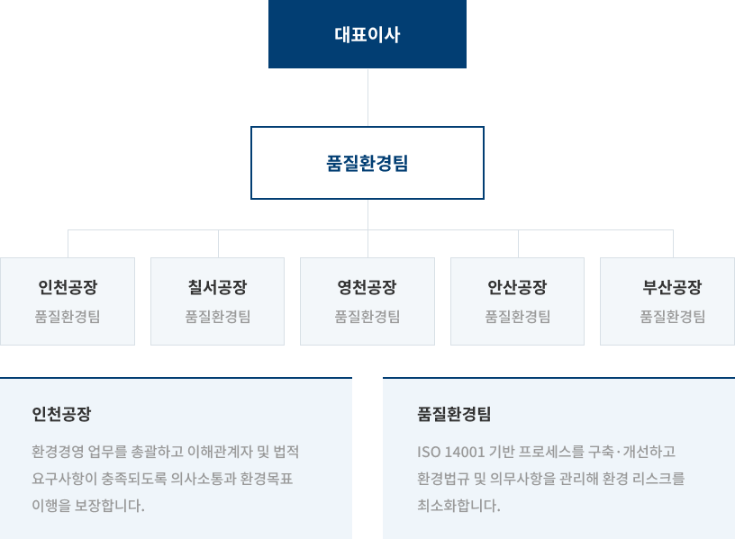
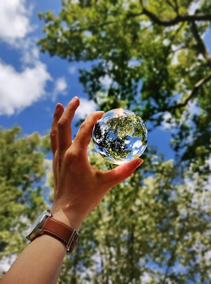

HOME > 지속가능경영 > 환경경영
ENVIRONMENTAL MANAGEMENT환경경영
ETHICAL PRINCIPLES 사조대림의 6대 윤리원칙
올바른 원칙과 책임 있는 행동을 바탕으로 공정하고 투명한 윤리경영을 실천합니다.
-
01
gavel
환경법규 준수
국내외 환경법규를 준수하고 법적 기준보다
엄격한 사내 기준을 운영합니다. -
02
cycle
경영체계 개선
환경경영 프로세스를 구축하고 운영·개선하여
환경성과를 높입니다. -
03
rate_review
환경영향 최소화
제품이 고객에게 전달되는 전 과정의 환경영향을
평가하고 개선합니다. -
04
conversation
정보·소통 강화
환경경영활동의 정보화와 내외부 커뮤니케이션을
통해 환경목표를 관리합니다. -
05
energy_program_time_used
에너지·배출 절감
에너지 낭비요인을 제거하고 온실가스를 포함한
배출가스 감축을 추진합니다. -
06
local_library
환경교육
환경경영활동의 지속성을 위해 필요한 교육과
자료를 체계적으로 확보합니다.
MANAGEMENT SYSTEM환경경영 이행
전담조직
대표이사가 환경경영 업무를 총괄하고 품질환경팀을 중심으로 각 사업장이 환경법규, 환경목표, 운영관리 및 개선활동을 수행합니다.

CORE STRATEGY기후위기 대응을 위한 핵심 전략
-
CLIMATE
- 교육·내재화
- 정기적인 교육과 커뮤니케이션을 통해 윤리의식을 조직문화로 정착시킵니다.
-
CHEMICAL
- 화학물질 관리 강화
- 화학물질의 보관·사용 과정에서 위험성을 선제적으로 관리하고 유해화학물질 사용량을 줄입니다.
-
CIRCULAR
- 자원순환 관리
- 재생에너지 활용, 폐기물 재활용·업사이클링, 용수 효율화와 재이용률 향상을 추진합니다.
-
BIODIVERSITY
- 생물다양성·환경정화
- 지역사회와 연계해 생물다양성 보전 및 환경정화 활동을 지속적으로 확대합니다.
MID-LONG TERM ROADMAP 중장기 환경목표
2020 — 2030
친환경관리 체계 구축
- 환경경영시스템 ISO 14001 인증
- 바이오매스 에너지 50% 전환
- 폐기물 재활용률 92% 달성
- 용수 재활용률 10% 달성
- 온실가스 감축 및 자원 재활용
- 친환경 인증 취득

2031 — 2050
지속가능 환경경영 관리
- 에너지경영시스템 ISO 50001 인증
- 바이오매스 에너지 80% 전환
- 폐기물 재활용률 95% 이상
- 용수 재활용률 30% 달성
- 온실가스 배출량 10% 감축
- 온실가스 배출량 제3자 검증체계 구축